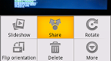

Pushr is a simple application for uploading photos from your phone to Flickr.
You can use Pushr two ways. The main screen, shown below, will upload all new photos to Flickr. This is for the most hardcore of Flickr users who want to share their entire camera roll.
Or, use the Share menu from anywhere you can send a picture (such as the Camera or Pictures apps) and use the Pushr button to upload just one photo.

That's about it! You can download a nightly build of Pushr, which is still in the early beta stages, or browse the source code if you're so inclined.